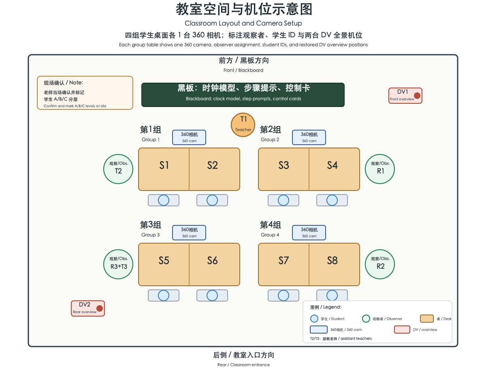
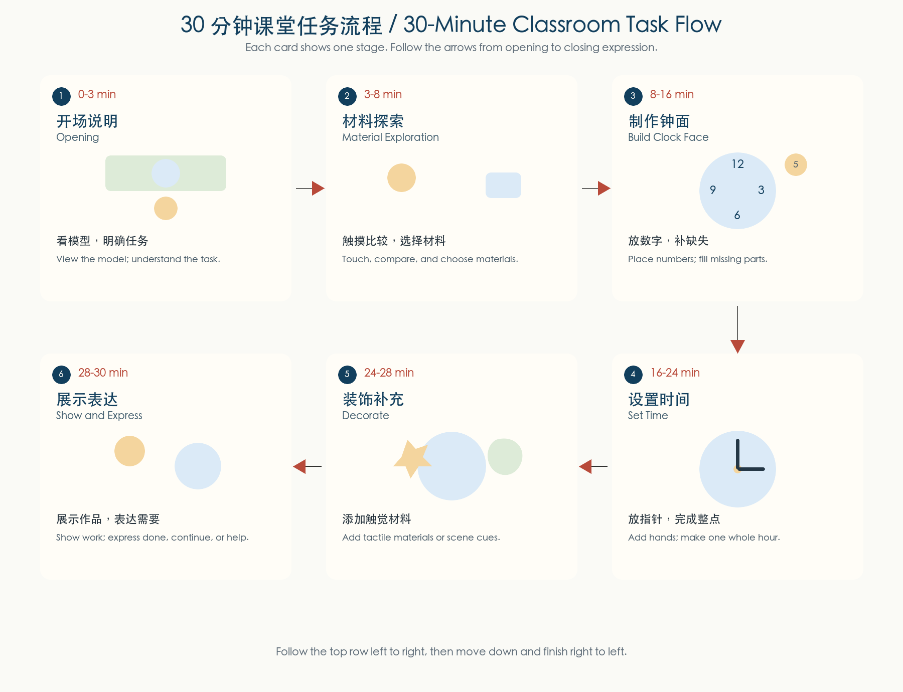

Project: Touch-to-Meaning Version: Researcher version Activity: Learning Everyday Clocks and Making Tactile Clocks Time: June 2, 2026, 14:15 Participants: 3 teachers, 7 students, 3 researchers Duration: About 30 minutes Format: Classroom activity with teacher support and researcher observation
This activity combines everyday clock learning with tactile making. Students create a tactile clock by choosing, touching, placing, moving, and decorating materials. The research team records participation, material use, expression, and responses to support.

| Area | Setup | Notes |
|---|---|---|
| Blackboard | Clock model, step prompts, control cards | Lead teacher explains and demonstrates here. |
| Four group tables | 7 students across 4 groups | Groups 1-3 have two students each; Group 4 has current S7 only. Each group has 1 tabletop 360 camera. |
| Group 360 cameras | 4 cameras total, one at each original tabletop position | Capture tabletop action, material use, and peer interaction. |
| DV overview cameras | Restore the original two DV positions: DV1 at the front-right overview position and DV2 at the rear-left overview position | R1/Hongni covers DV1; R3/Qiyuan covers DV2. |
| Group observer assignments | Group 1: T2 temporarily recorded field notes; Group 2: O1/R1/Hongni; Group 3: O3/R3/Qiyuan; Group 4: O2/R2/Xinyu | June 2 had only three research observers. T2 also served as an assistant teacher, so this dual role is treated as a setup limitation rather than the preferred later protocol. |
| Work collection area | Work ID labels and photo area | Assign IDs to student works only, not to loose materials. |
Figure note: yellow rectangles show group desks; blue boxes show the four 360 cameras; red boxes show DV1 and DV2; green circles show the three research-observer positions. Group 1 is labeled with T2’s temporary field-note role. Group 4 contains only current S7. The old former S7 record record is removed from the current analyzable setup, and historical S8 labels should be read as current S7 when they appear only as raw-source metadata.
These tasks happen before class and are not part of the 30-minute student activity.
| Time | Lead | Task | Output |
|---|---|---|---|
| 30-20 min before | Hongni | Confirm room layout, four group tables, seven-student mapping, work ID rule, consent boundary, Group 2/O1 observation scope, DV1 overview position, and Group 1/T2 temporary field-note label. | Layout, consent boundary, G1/G2, and DV1 mapping |
| 20-10 min before | Qiyuan | Set up and check the Group 3 360 camera and DV2: position, battery, storage, device time, and test clip. | G3 and DV2 camera-file mapping |
| 20-10 min before | Xinyu | Set up and check the Group 4 360 camera: position, battery, storage, device time, and test clip. | G4 camera-file mapping |
| 10-5 min before | Hongni, Qiyuan, Xinyu | Sync device time, confirm recording, and confirm each researcher’s Field Notes scope. | Time baseline and observation split |
| 0-10 min after | Qiyuan | Stop recording, power off, remove, and pack the Group 3 360 camera, DV2, and related equipment. | G3/DV2 equipment return checklist |
| 0-15 min after | Xinyu | Collect and photograph student works, check work IDs, organize tabletop materials, and confirm the Group 4 camera file. | Work photos, work IDs, materials returned, G4 mapping |
| 0-15 min after | Hongni | Record teacher feedback, confirm questions, and check Group 2/DV1 file mapping. | Teacher feedback notes and G2/DV1 mapping |

During class, researchers use the Field Notes template to record key moments, time ranges, group/work IDs, and evidence sources.
| Researcher | Main focus during class | After-class task |
|---|---|---|
| Hongni | R1: Field Notes for Group 2, DV1 overview context, consent boundary, teacher support, and questions to confirm | Lead teacher feedback notes; confirm Group 2 and DV1 files |
| Qiyuan | R3: Field Notes for Group 3 and DV2 overview context; check the Group 3 360 camera and DV2 status when possible | Stop recording, remove, and pack Group 3/DV2 equipment |
| Xinyu | R2: Field Notes for Group 4; check the Group 4 360 camera status when possible | Collect works, photograph them, and organize materials |
For detailed data-source definitions, file mapping, and post-class
organization, see Appendix B:
data_collection_appendix_zh.md.
| Check | Category | Brief note |
|---|---|---|
| □ | Class information | Date, time, location, seven-student mapping, grouping, teacher count |
| □ | Camera-file mapping | Hongni checks Group 2 and DV1, Qiyuan checks Group 3 and DV2, Xinyu checks Group 4, and the team confirms Group 1/T2 temporary field-note mapping during layout check |
| □ | Student participation | Engagement, waiting, help-seeking, leaving task, completion |
| □ | Material interaction | Choosing, touching, pressing, placing, moving, repeating, avoiding, substituting |
| □ | Clock learning behavior | Number placement, missing-number completion, hand direction, hour choice |
| □ | Teacher support | Prompting, modeling, waiting, assisting, replacing materials, emotional support |
| □ | Student expression | Done, continue, change, help, pause, stop, refuse, emotion change |
| □ | Student works | Work ID, photo, material use, number placement, hand placement |
| □ | Teacher feedback | Behavior interpretation, misreading risk, next adjustment |
| ID | Action | Owner | Due | Status |
|---|---|---|---|---|
| A1 | Confirm final student list and grouping | |||
| A2 | Confirm consent boundary for research analysis | |||
| A3 | Prepare work ID labels and photo area | |||
| A4 | Confirm Group 1/T2 temporary field-note label and 360 camera file mapping | Hongni | ||
| A5 | Hongni confirms Group 2 360 camera position, DV1 overview position, and filenames | Hongni | ||
| A6 | Qiyuan confirms Group 3 360 camera position, DV2 overview position, and filenames | Qiyuan | ||
| A7 | Xinyu confirms Group 4 360 camera position and filename | Xinyu | ||
| A8 | Prepare three Field Notes templates | |||
| A9 | Prepare the data checklist and Appendix B | |||
| A10 | Complete teacher feedback notes | Hongni |
The corrected setup history is recorded in
plan/classroom_setup_history_june2_22_2026-06-18.md. June 2
used three research observers, while T2 temporarily wrote Group 1 field
notes in addition to assistant-teacher support. This split T2’s
attention, so later sessions separated observer field-note recording
from assistant-teacher support. The current student-code mapping treats
Group 4 as S7 only; old former S7 record information should be removed
from current setup summaries, and old S8 raw-source labels should be
interpreted as current S7 when retained as raw metadata.